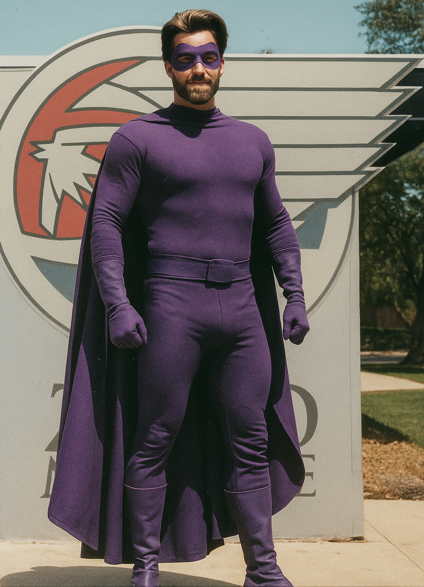

Strength40
Endurance60
Intelligence90
Agility75
Indestructibility30
Powers
- Social Telepathy
- Emotional Omniscience, Touch-Based Hypnosis
- Crowd Control, Seduction Mastery
- Psychic Feedback, Tech Limits
Personality
- Flirtatious, Silver-tongued narcissist
- Tactical Genius
- Sees people as puppets
- Overconfident, and known to Self-Sabotage